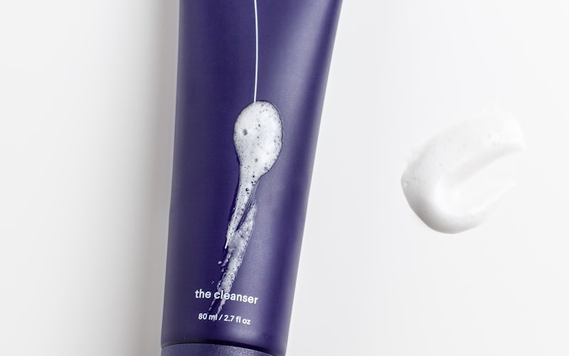
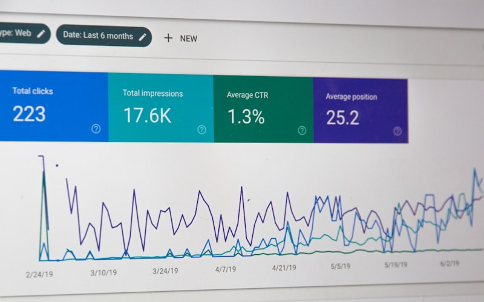

Explore Our Categories
Discover curated content across six distinct categories, each filled with vintage charm and timeless wisdom.
Fashion & Accessories
Vintage style guides, timeless accessories, and fashion inspiration from bygone eras
5 Articles
Style

Health & Beauty
Natural beauty tips, wellness routines, and self-care essentials for a timeless glow
3 Articles
Wellness
Home & Garden
Vintage decor, gardening tips, and creating cozy living spaces with nostalgic charm
4 Articles
Lifestyle

Travel & Accommodation
Travel guides, unique stays, and wanderlust inspiration for the vintage traveler
6 Articles
Adventure

Finance & Insurance
Smart money tips, investment guides, and financial planning with timeless wisdom
2 Articles
Money
Food & Beverages
Vintage recipes, artisanal foods, and culinary adventures from around the world
3 Articles
Culinary
Popular Articles by Category
Category Overview
25+
Total Articles
6
Categories
Weekly
New Content
1000+
Happy Readers